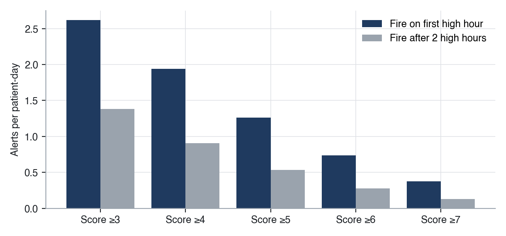
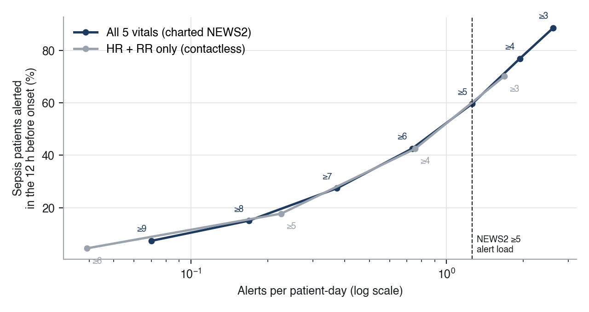
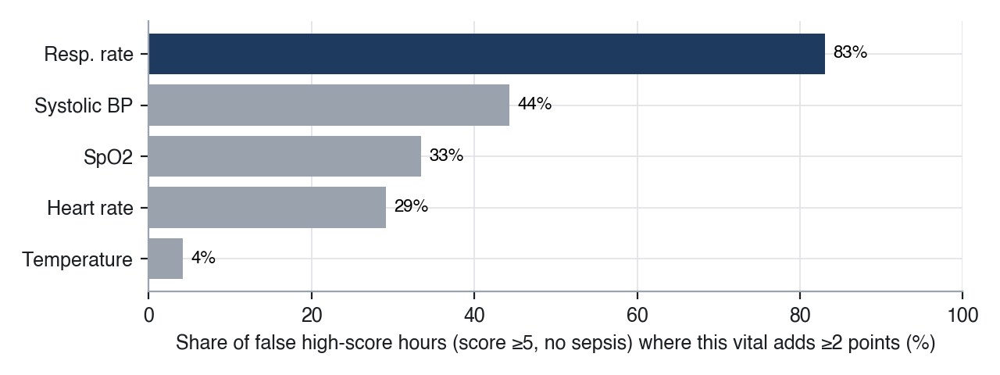

| Analyst | Mohammad Faiz Ahmad, IIT Patna | Status | Final |
|---|---|---|---|
| Data source | PhysioNet/Computing in Cardiology Challenge 2019, training sets A and B (Reyna et al., Crit Care Med 2020) | Coverage | All 40,336 ICU stays, 1,552,210 patient-hours (no sampling) |
Question. An early warning is only useful if staff still trust it. How much early catch does a standard vital-sign alert rule buy, how many alarms does the ward pay for it, and can a better rule or a simpler sensor change that trade?
Answer in one line. The standard NEWS2 ≥ 5 rule catches 6 in 10 sepsis patients about 10 hours early, but only about 1 in 34 alarms comes before a real sepsis case. Requiring the score to stay high for 2 hours (at a threshold of 4) keeps the same catch rate with 28% fewer alarms, and heart rate + breathing rate alone get within 2 points of the full five-vital score at the same alarm load.
| Group | Stays | Use |
|---|---|---|
| No sepsis | 37,404 | Every hour scored; all their alarms are false for this question |
| Sepsis during the stay | 2,506 | Hours before onset scored; the 12 h before onset is the "catch window" |
| Septic on arrival | 426 | Excluded: nothing left to warn about |
| Total | 40,336 | 1,539,289 patient-hours scored |
PhysioNet shifts the sepsis label 6 hours early, so onset = first labelled hour + 6. Onset follows the Sepsis-3 definition.
| Term | Definition |
|---|---|
| Modified NEWS2 | NEWS2 points for respiratory rate, SpO2, systolic BP, heart rate, temperature (0–15). No consciousness or oxygen-support fields in the data |
| HR + RR score | Only the heart-rate and breathing-rate points (0–6): what a contactless under-mattress sensor reads |
| Alarm | Fires when the score reaches the threshold (optionally for 2 hours in a row); a standing alarm counts once |
| Catch rate | Sepsis patients with an alarm on in the 12 h before onset |
| Precision | Alarms fired in a catch window ÷ all alarms |
Vitals are carried forward from the last reading (what a monitor would still show). Never-measured vitals score 0.
The ward-standard trigger, NEWS2 ≥ 5, puts an alarm on 59.7% of sepsis patients in the 12 hours before onset, with a median lead of 10 hours. The cost is 1.26 alarms per patient-day, and only 2.9% of those alarms fire in a catch window. Put simply, a nurse answers about 34 alarms for every one that comes before a sepsis case.
| Rule (all 5 vitals) | Catch rate | Median lead | Alarms / patient-day | Precision |
|---|---|---|---|---|
| Score ≥ 3 | 88.6% | 12 h | 2.62 | 1.8% |
| Score ≥ 4 | 76.9% | 11 h | 1.94 | 2.3% |
| Score ≥ 5 (NEWS2 "medium") | 59.7% | 10 h | 1.26 | 2.9% |
| Score ≥ 6 | 42.6% | 9 h | 0.73 | 3.4% |
| Score ≥ 7 (NEWS2 "high") | 27.4% | 8 h | 0.37 | 4.2% |
Median lead is capped at 12 h by the window. Below a threshold of 3 the alarm is on most of the time (38% of all hours at ≥ 3, 76% at ≥ 1), so it stops being a signal at all.
Raising the threshold buys precision slowly and loses catches quickly: going from ≥ 5 to ≥ 7 cuts alarms by 70% but loses more than half the catches, while precision only goes from 2.9% to 4.2%. Moving the threshold alone cannot fix alert fatigue.
A simple suppression rule waits until the score has been high for 2 hours in a row. At the same threshold of 5, it cuts alarms by 58% (1.26 → 0.53 per patient-day) but drops the catch rate by 18.8 points (59.7% → 40.9%). The better use of persistence is to lower the threshold and add the wait:
| Rule | Catch rate | Median lead | Alarms / patient-day |
|---|---|---|---|
| Score ≥ 5, fire at once (standard) | 59.7% | 10 h | 1.26 |
| Score ≥ 4, fire after 2 high hours | 59.6% | 10 h | 0.91 (−28%) |

A contactless under-mattress sensor reads heart rate and breathing rate, continuously and without a nurse. Can those two alone stand in for the five charted vitals? Comparing the two scores at the same alarm load (the only fair comparison, because their scales differ): at NEWS2 ≥ 5's load of 1.26 alarms per patient-day, the HR + RR score catches 57.6% vs 59.7% for all five vitals. That is 96% of the detection with two signals.

Freshness matters too. Even in this ICU data, the "current" value is a fresh reading in only 90% of hours for heart rate, 85% for breathing rate and 34% for temperature; the rest are carried forward. On a general ward, where vitals are charted every 4–6 hours, the gap is far larger. That is the case for continuous HR + RR, rather than for more vitals.

Breathing rate is both the strongest signal and the biggest source of noise. For a product built on HR + RR, the accuracy and smoothing of the breathing-rate reading decide the alarm burden more than any threshold choice.
| File | What it does |
|---|---|
01_cohort.sql | One row per stay; onset hour; no-sepsis / sepsis / septic-on-arrival |
02_hourly_scores.sql | Carry-forward vitals (last_value … IGNORE NULLS), NEWS2 points, both scores, catch window |
03_rule_grid.sql | 30 rules (score × threshold × persistence); LAG for persistence and alarm on-switch; catch rate, lead, load, precision |
04_measurement_gaps.sql | Share of hours with a fresh reading per vital |
05_false_alarm_drivers.sql | Which vitals push no-sepsis patients to a score of 5+ |
# reproduce (~1 min after download) ./download_data.sh && python run.py # results/*.csv, results/summary.json, charts/*.png